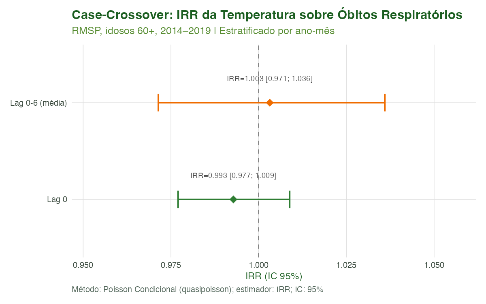
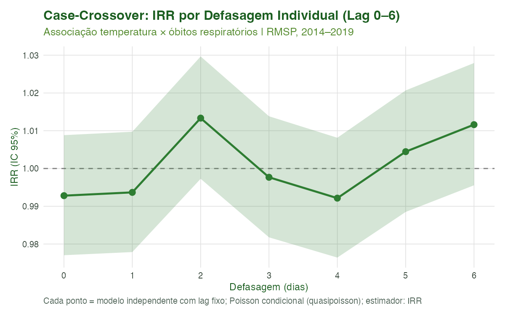
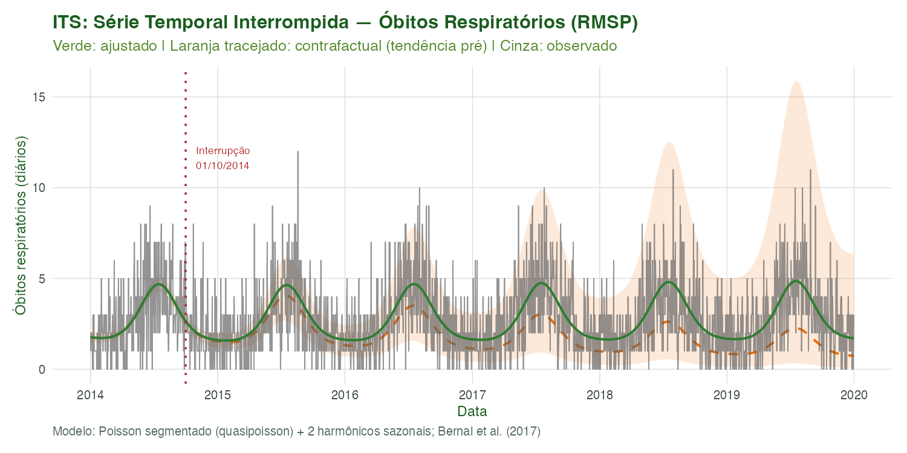
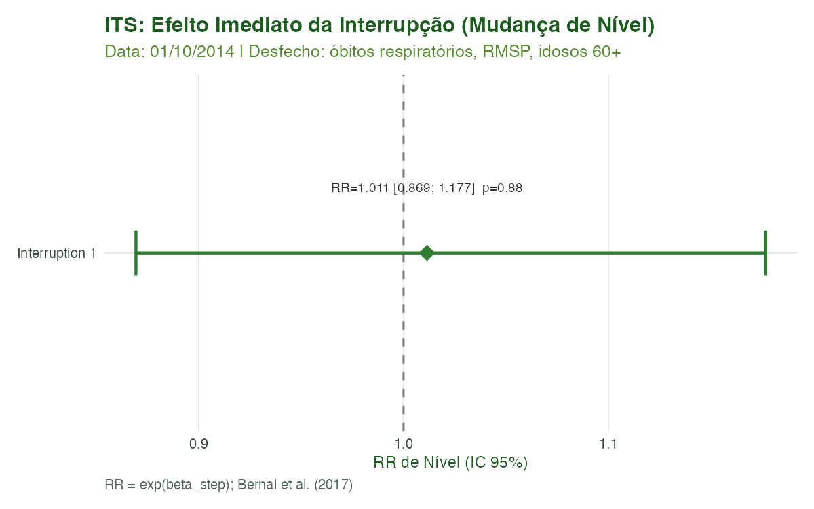
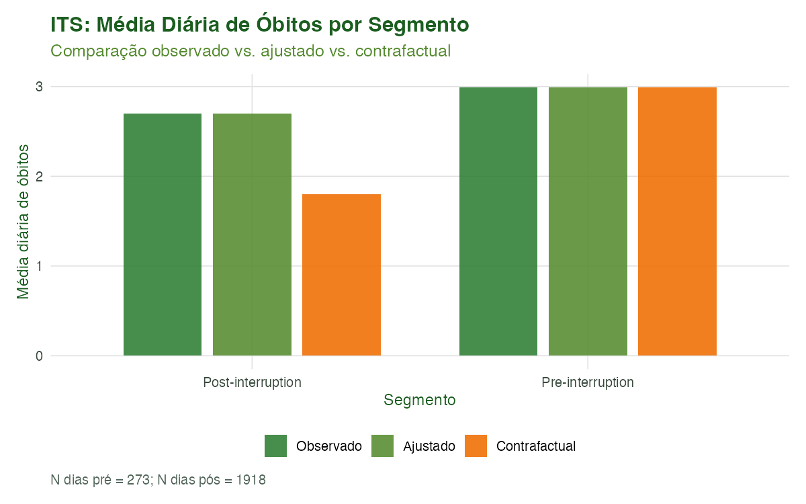
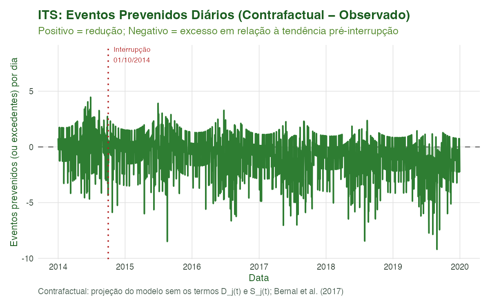

Modelagem 03: Case-Crossover e Séries Temporais Interrompidas
Equipe climasus4r
14/06/2026
Source:vignettes/mod-03-crossover-its.Rmd
mod-03-crossover-its.RmdObjetivo
Ao final deste tutorial você será capaz de:
- Ajustar um Case-Crossover estratificado por tempo
(
sus_mod_casecrossover()) para quantificar a associação entre temperatura e óbitos respiratórios, controlando confundimento sazonal e de longo prazo por desenho. - Comparar especificações de defasagem (lag-0 e lag 0-6) e métodos de ajuste (Poisson condicional vs. clogit).
- Ajustar uma Série Temporal Interrompida
(
sus_mod_its()) para estimar efeitos imediatos e tendências após uma data de interrupção, com contrafactual projetado. - Visualizar e interpretar os resultados com
sus_mod_plot_its().
Estas abordagens completam o repertório de análises de séries temporais em epidemiologia ambiental, complementando o DLNM (Tutorial Modelagem 01) e a fração atribuível (Tutorial Modelagem 02).
Contexto científico
Case-Crossover
O desenho case-crossover (Maclure, 1991) foi criado para estudar exposições transitórias e desfechos agudos. Cada indivíduo (ou dia-desfecho) funciona como seu próprio controle: a exposição no dia do evento é comparada com a exposição em dias de referência dentro do mesmo estrato temporal. Isso elimina, por construção, todos os confundidores que variam lentamente — sazonalidade, tendências de longo prazo, fatores socioeconômicos estáveis.
A versão estratificada por tempo (Levy et al., 2001;
Armstrong et al., 2014) agrupa os controles dentro de meses ou semanas
(estratos ano-mês no climasus4r), tornando o estimador
equivalente a uma Poisson condicional com efeitos fixos
de estrato. Os efeitos fixos de estrato absorvem toda variação entre
meses e anos — sazonalidade anual, tendência de longo prazo, fatores
socioeconômicos estáveis — mas confundidores que variam dentro
do mesmo mês (ex.: feriados, umidade relativa) devem ser ajustados
explicitamente via covariates. Para dados de contagem
agregados (séries diárias de óbitos por município), o método de
Poisson Condicional é preferível ao clogit (Armstrong
et al., 2014).
IRR vs. OR: No método
"conditional_poisson", o coeficiente estimado é um IRR (Incidence Rate Ratio) — razão de taxas de incidência. Sob a hipótese de evento raro, IRR ≈ OR. No método"clogit", o estimador é um OR estrito. Oclimasus4rusa os campos$or_table,or,or_lo,or_hipara ambos os métodos por uniformidade; interprete como IRR quandomethod = "conditional_poisson"e como OR quandomethod = "clogit".
Série Temporal Interrompida (ITS)
A análise de séries temporais interrompidas (Bernal et al., 2017) avalia o impacto causal de uma intervenção ou evento sobre uma série de contagens. O modelo segmentado estima dois componentes para cada interrupção:
- Mudança de nível (level change): efeito imediato no período pós.
- Mudança de tendência (slope change): desvio sustentado na trajetória após a interrupção.
O contrafactual é a projeção da tendência pré-interrupção para o período pós, permitindo estimar quantos eventos foram prevenidos (ou excedidos) pela interrupção.
Caso condutor. Investigamos a associação entre temperatura e óbitos respiratórios em idosos (60+) na Região Metropolitana de São Paulo, 2014–2019 (CID-10: J00–J99). No case-crossover, estimamos o IRR por 1 °C de temperatura (lag-0 e lag 0-6; Poisson condicional). Na ITS, usamos outubro de 2014 como data de interrupção hipotética — representando um episódio de anomalia climática — para demonstrar a detecção de mudanças abruptas em séries de saúde.
Dados utilizados
| Dado | Arquivo | Colunas-chave | Origem |
|---|---|---|---|
| Série diária de óbitos, RMSP |
dados/caso_serie.rds ($serie_diaria) |
date, n_obitos
|
SIM-DO (Tutorial 1–4) |
| Temperatura diária INMET | dados/caso_clima_estacao.rds |
date, tair_dry_bulb_c
|
Tutorial 7 |
Os dados são carregados pelo script de pré-renderização. Caso os arquivos não existam, o script sintetiza uma série mínima realista com aviso explícito — o tutorial renderiza sem erros, mas os resultados numéricos não devem ser usados para publicação.
Pipeline completo
library(climasus4r)
library(dplyr)
# tidy() é fornecido pelo pacote 'generics' (re-exportado pelo climasus4r)
# Se não estiver disponível via climasus4r, carregue: library(generics)Carregar e preparar os dados
# Série de óbitos (caso_serie.rds gerado pelo Tutorial 4)
# Caminhos relativos ao diretório da vignette (vignettes-pt/)
raw_serie <- readRDS("dados/caso_serie.rds")
df_serie <- raw_serie$serie_diaria |>
group_by(date) |>
summarise(n_obitos = sum(n_obitos, na.rm = TRUE), .groups = "drop") |>
mutate(date = as.Date(date))
# Temperatura INMET (caso_clima_estacao.rds gerado pelo Tutorial 7)
df_clima <- readRDS("dados/caso_clima_estacao.rds") |>
group_by(date) |>
summarise(tair_dry_bulb_c = mean(tair_dry_bulb_c, na.rm = TRUE),
.groups = "drop") |>
mutate(date = as.Date(date))
# Junção série + clima
df_joint <- inner_join(df_serie, df_clima, by = "date")Case-Crossover — Lag-0
cc0 <- sus_mod_casecrossover(
data = df_joint,
outcome_col = "n_obitos",
exposure_col = "tair_dry_bulb_c",
stratum = "month", # estratos = ano-mês (e.g. "2014-10")
lag = 0L, # temperatura do mesmo dia
method = "conditional_poisson",
family = "quasipoisson", # robusto à superdispersão
alpha = 0.05,
lang = "pt"
)
print(cc0)
tidy(cc0) # tibble com IRR (campos: or/or_lo/or_hi), IC95%, p-valor
# Nota: para method="conditional_poisson", o estimador é o IRR (Incidence Rate Ratio),
# equivalente ao RR sob a hipótese de evento raro. Os campos chamam-se or/or_lo/or_hi
# por uniformidade com o método clogit (que retorna OR estrito).Case-Crossover — Lag 0-6 (média móvel)
cc06 <- sus_mod_casecrossover(
data = df_joint,
outcome_col = "n_obitos",
exposure_col = "tair_dry_bulb_c",
stratum = "month",
lag = 0L:6L, # média da temperatura dos últimos 7 dias
method = "conditional_poisson",
family = "quasipoisson",
alpha = 0.05,
lang = "pt"
)
print(cc06)Case-Crossover — clogit (opcional)
# Requer o pacote 'survival'. Trata o desfecho como binário (is_case = count > 0).
# Adequado para eventos raros; para séries de contagem diária, prefira
# method = "conditional_poisson" (Armstrong et al., 2014).
if (requireNamespace("survival", quietly = TRUE)) {
cc_clogit <- sus_mod_casecrossover(
data = df_joint,
outcome_col = "n_obitos",
exposure_col = "tair_dry_bulb_c",
stratum = "month",
lag = 0L,
method = "clogit",
alpha = 0.05,
lang = "pt"
)
print(cc_clogit)
}Série Temporal Interrompida
its1 <- sus_mod_its(
data = df_joint,
outcome_col = "n_obitos",
date_col = "date",
interruption_dates = as.Date("2014-10-01"), # data de interrupção
harmonics = 2L, # 2 pares de harmônicos (sazonalidade)
family = "quasipoisson",
covariates = NULL,
alpha = 0.05,
counterfactual = TRUE, # projeta tendência pré para comparação
lang = "pt"
)
print(its1)
tidy(its1) # tibble: efeito imediato + tendência por interrupção
its1$segments # média diária por segmento (pré / pós)
its1$counterfactual # série: observado, ajustado, contrafactual, prevenidosVisualização com sus_mod_plot_its()
Nota de implementação:
sus_mod_plot_its()é a função de visualização pareada aosus_mod_its(). Os blocos abaixo documentam a API planejada (eval = FALSE). As figuras nos resultados ilustrados foram geradas com ggplot2 direto no script de pré-renderização. Quando a função estiver disponível no pacote, substitua os blocos do script pelo padrão abaixo.
# Tipo "series": série observada, ajustada e contrafactual com IC
p_serie <- sus_mod_plot_its(
fit = its1,
type = "series",
output_type = "plot",
lang = "pt"
)
p_serie
# Tipo "effects": floresta de RR de nível e tendência por interrupção
p_effects <- sus_mod_plot_its(
fit = its1,
type = "effects",
output_type = "plot",
lang = "pt"
)
p_effects
# Tipo "segments": barras comparativas por segmento
p_segs <- sus_mod_plot_its(
fit = its1,
type = "segments",
output_type = "plot",
lang = "pt"
)
p_segs
# Tipo "prevented": série de eventos prevenidos (ou excedentes)
p_prev <- sus_mod_plot_its(
fit = its1,
type = "prevented",
output_type = "plot",
lang = "pt"
)
p_prev
# output_type = "table": retorna tibble com os dados do gráfico
tbl_cf <- sus_mod_plot_its(
fit = its1,
type = "series",
output_type = "table",
lang = "pt"
)
head(tbl_cf)Características das funções
sus_mod_casecrossover()
Função de modelagem para case-crossover estratificado por tempo.
Aceita climasus_df ou data.frame com colunas
date, desfecho e exposição. Retorna um objeto
climasus_casecrossover.
| Argumento | Padrão | Descrição |
|---|---|---|
data |
— |
climasus_df (stage "aggregate" ou
"climate") ou data.frame
|
outcome_col |
"n_obitos" |
Nome da coluna de contagem do desfecho |
exposure_col |
(obrigatório) | Nome da coluna de exposição (ex.: "tair_dry_bulb_c",
"pm25_mean") |
covariates |
NULL |
Confundidores adicionais que variam dentro do estrato |
stratum |
"month" |
Tipo de estrato temporal: "month" (estratos ano-mês,
e.g. "2014-10"), "week" (iso-semana), ou nome
de coluna existente para estratos personalizados |
lag |
0L |
Defasagem(s) aplicadas à exposição; vetor = média dos lags especificados |
method |
"conditional_poisson" |
"conditional_poisson" (GLM com
factor(stratum_id)) ou "clogit"
(survival::clogit()) |
family |
"quasipoisson" |
Família GLM para conditional_poisson; ignorado no
clogit
|
alpha |
0.05 |
Nível de significância para IC |
lang |
"pt" |
Idioma das mensagens ("pt", "en",
"es") |
verbose |
TRUE |
Exibe progresso |
Retorno — climasus_casecrossover:
| Campo | Conteúdo |
|---|---|
$model |
Objeto glm (conditional_poisson) ou clogit
(survival) |
$or_table |
Tibble: term, lag_spec,
estimate (log-IRR para conditional_poisson,
log-OR para clogit), or, or_lo,
or_hi, p_value
|
$data |
Dataset de análise: date, outcome_val,
exposure_val, stratum_id, covariáveis |
$diagnostics |
n_obs, n_cases, n_strata,
disp_ratio, method, family
|
$meta |
Parâmetros de chamada: outcome_col,
exposure_col, stratum, lag,
etc. |
Métodos S3 disponíveis: print(),
summary(), tidy() (retorna
$or_table com metadados prefixados, adequado para
bind_rows() entre cidades).
sus_mod_its()
Análise de séries temporais interrompidas por regressão de Poisson
segmentada. Suporta múltiplas interrupções e contrafactual. Retorna um
objeto climasus_its.
| Argumento | Padrão | Descrição |
|---|---|---|
data |
— |
climasus_df ou data.frame com colunas de
data e contagem |
outcome_col |
"n_obitos" |
Coluna de desfecho |
date_col |
"date" |
Coluna de data |
interruption_dates |
(obrigatório) | Data(s) de interrupção (ISO "YYYY-MM-DD"); escalar ou
vetor |
harmonics |
2L |
Número de pares de harmônicos sazonais ( na equação) |
family |
"quasipoisson" |
Família GLM: "quasipoisson" ou
"poisson"
|
covariates |
NULL |
Confundidores adicionais (ex.: "rh_pct",
"holiday") |
alpha |
0.05 |
Nível de significância |
counterfactual |
TRUE |
Calcular e retornar contrafactual |
lang |
"pt" |
Idioma das mensagens |
verbose |
TRUE |
Exibe progresso |
Retorno — climasus_its:
| Campo | Conteúdo |
|---|---|
$model |
Objeto glm
|
$effects |
Tibble por interrupção: label,
interruption_date, level_ratio,
level_ci_lo, level_ci_hi,
level_p, slope_daily_log,
slope_ratio_annual, slope_p
|
$counterfactual |
Tibble diário: date, observed,
predicted, counterfactual, cf_lo,
cf_hi, ratio_to_cf,
prevented
|
$segments |
Tibble por segmento: segment, start_date,
end_date, n_days, mean_observed,
mean_predicted, mean_counterfactual
|
$data |
Dataset com todas as covariáveis do modelo |
$meta |
Parâmetros e diagnósticos: n_obs, n_pre,
disp_ratio, interruption_dates, etc. |
Métodos S3 disponíveis: print(),
summary(), tidy() (retorna
$effects com metadados, ideal para combinar múltiplas
cidades com bind_rows()).
sus_mod_plot_its()
Status: função planejada para o
climasus4r. A API abaixo documenta a especificação completa. As figuras deste tutorial foram geradas via ggplot2 direto no script de pré-renderização (scripts/modelagem_03_crossover_its.R); quandosus_mod_plot_its()estiver disponível, substituirá esse código.
Visualização pareada do objeto climasus_its. Todos os
type= operam sobre os mesmos dados internos — escolha
conforme o aspecto do modelo que deseja comunicar.
type = |
O que exibe | Tabela retornada |
|---|---|---|
"series" |
Série temporal completa com observado, ajustado e contrafactual (IC) + linha de interrupção | Tibble com colunas do $counterfactual
|
"effects" |
Floresta de RR de nível e mudança de tendência por interrupção | Tibble com $effects formatado |
"segments" |
Barras comparativas das médias observado/ajustado/contrafactual por segmento | Tibble com $segments em formato longo |
"prevented" |
Série de eventos prevenidos (ou excedentes) = counterfactual − observado | Tibble com data e prevenidos acumulados |
Argumento output_type: -
"plot" (padrão): retorna objeto ggplot2. -
"table": retorna tibble. - "all": retorna
lista list(plot = ..., table = ...).
Argumento interactive = TRUE: converte
o gráfico para plotly (requer plotly
instalado).
Formulação matemática
Case-Crossover (Poisson Condicional)
onde
é o intercepto do estrato
(absorvido como factor(stratum_id) no GLM),
é a exposição no dia
com defasagem
(ou a média aritmética dos lags
quando lag é um vetor), e
são covariáveis que variam dentro do estrato. A razão
de taxas de incidência (Incidence Rate Ratio) é:
No método "clogit" (Maclure, 1991), o desfecho é o
indicador binário
e o modelo de Cox condicional é ajustado com
survival::clogit(), produzindo uma razão de
chances
().
Para séries de contagem com desfecho frequente, prefira
"conditional_poisson", pois o OR superestima o IRR quando o
evento não é raro (Armstrong et al., 2014).
Série Temporal Interrompida
Para datas de interrupção , o modelo segmentado é:
onde é o indicador de nível (step) e é o termo de inclinação (slope change / “hockey stick”).
| Parâmetro | Interpretação |
|---|---|
| RR imediato (mudança de nível) na interrupção | |
| RR de tendência por dia após a interrupção | |
| RR de tendência anualizado |
O contrafactual é a predição do modelo com para todo — ou seja, a projeção da tendência pré-interrupção para o período pós.
Resultados ilustrados
Tabela 1. IRR da Temperatura sobre Óbitos Respiratórios (Case-Crossover)
| especificacao | lag_spec | or | or_lo | or_hi | p_value |
|---|---|---|---|---|---|
| Lag 0 | 0 | 0.9928 | 0.9770 | 1.0088 | 0.377 |
| Lag 0-6 (media) | 0-6 | 1.0032 | 0.9714 | 1.0360 | 0.847 |
Figura 1. IRR por Especificação de Lag (Floresta)

Figura 1. IRR (Incidence Rate Ratio) da temperatura (por 1 °C) sobre óbitos respiratórios diários na RMSP, comparando lag-0 (temperatura do mesmo dia) e lag 0-6 (média dos últimos 7 dias). Poisson condicional (quasipoisson), estratificado por ano-mês. IC: 95%.
Figura 2. IRR por Defasagem Individual (Lag 0 a 6)

Figura 2. IRR da temperatura para cada defasagem individual (lag 0 a 6 dias). Cada ponto representa um modelo case-crossover independente com lag fixo (Poisson condicional, quasipoisson). A curva revela o perfil temporal da associação exposição-resposta.
Figura 3. ITS — Série Observada, Ajustada e Contrafactual

Figura 3. Série temporal de óbitos respiratórios diários na RMSP (cinza: observado; verde: ajustado pelo modelo ITS; laranja tracejado: contrafactual com IC 95%). A linha pontilhada vertical indica a data de interrupção (01/10/2014). O afastamento entre ajustado e contrafactual mede o efeito atribuível à interrupção.
Figura 4. ITS — Efeito Imediato (Floresta)

Figura 4. RR de nível (mudança imediata) estimado pelo modelo ITS para a interrupção de 01/10/2014. RR > 1 indica aumento de óbitos; RR < 1, redução. IC: 95%.
Tabela 2. Efeitos do Modelo ITS
| label | interruption_date | level_ratio | level_ci_lo | level_ci_hi | level_p | slope_daily_log | slope_ratio_annual | slope_p |
|---|---|---|---|---|---|---|---|---|
| Interruption 1 | 2014-10-01 | 1.0115 | 0.8694 | 1.1767 | 0.883 | 0.0004293 | 1.1698 | 0.421 |
Figura 5. ITS — Médias por Segmento

Figura 5. Média diária de óbitos respiratórios por segmento (pré- e pós-interrupção). Três barras por segmento: observado, ajustado pelo modelo e contrafactual (projeção da tendência pré-interrupção).
Figura 6. ITS — Eventos Prevenidos (ou Excedentes) Diários

Figura 6. Série diária de eventos prevenidos (contrafactual −
observado). Valores positivos indicam redução de óbitos atribuível à
interrupção; valores negativos indicam excesso. A linha horizontal em
zero é a referência de nenhum efeito. Corresponde ao campo
prevented de $counterfactual.
Referências
Armstrong, B.G., Gasparrini, A., & Tobias, A. (2014). Conditional Poisson models: a flexible alternative to conditional logistic case crossover analysis. BMC Medical Research Methodology, 14, 122. https://doi.org/10.1186/1471-2288-14-122
Bernal, J.L., Cummins, S., & Gasparrini, A. (2017). Interrupted time series regression for the evaluation of public health interventions: a tutorial. International Journal of Epidemiology, 46(1), 348–355. https://doi.org/10.1093/ije/dyw098
Levy, D., Lumley, T., Sheppard, L., Kaufman, J., & Checkoway, H. (2001). Referent selection in case-crossover analyses of acute health effects of air pollution. Epidemiology, 12(2), 186–192.
Maclure, M. (1991). The case-crossover design: a method for studying transient effects on the risk of acute events. American Journal of Epidemiology, 133(2), 144–153. https://doi.org/10.1093/oxfordjournals.aje.a115853
Penfold, R.B., & Zhang, F. (2013). Use of interrupted time series analysis in evaluating health care quality improvements. Academic Pediatrics, 13(6 Suppl), S38–44. https://doi.org/10.1016/j.acap.2013.08.002
Saldanha, R.F., Bastos, R.R., & Barcellos, C. (2019). Microdatasus: pacote para download e pré-processamento de microdados do DataSUS. Cadernos de Saúde Pública, 35(9), e00032419. https://doi.org/10.1590/0102-311X00032419
Whitaker, H.J., Farrington, C.P., Spiessens, B., & Musonda, P. (2006). Tutorial in biostatistics: the self-controlled case series method. Statistics in Medicine, 25(10), 1768–1797. https://doi.org/10.1002/sim.2302
Navegação
| Anterior | Modelagem 02: Fração Atribuível |
| Próximo | Modelagem 04: Multicidade e Metanálise |
| Hub | Todos os tutoriais |